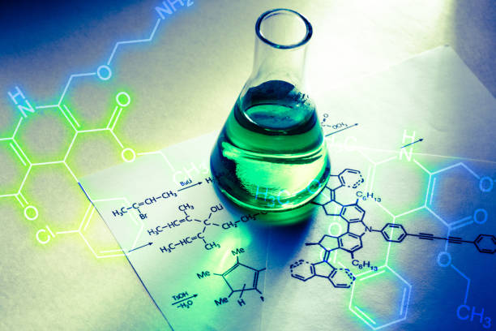

Bridging Molecular Science with Computational Intelligence
Accelerating Discovery through AI-Driven Molecular Design
I leverage advanced machine learning, deep learning, and molecular simulations to bridge the gap between complex chemical structures and functional, real-world applications. By transforming traditional, "guess-and-check" laboratory methods into high-speed, in-silico,"design-first" workflows, I enable the rapid identification and optimization of novel molecules.


Core Competencies & Impact
- AI-Driven Molecular Design: Utilizing generative models (GANs) to create novel molecules with desired properties.
- Predictive Modeling & Simulations: Employing molecular dynamics (MD) and quantum mechanics to predict structure-activity relationships, binding affinities, and toxicity.
- Autonomous Discovery: Developing closed-loops AI workflows that optimize drug and material design pipelines.
- Protein & Bimolecular Engineering: Leveraging AI (like AlphaFold) to analyze structure-function relationships.
- AI-Driven Molecular Design: Utilizing generative models (GANs) to create novel molecules with desired properties.
- Predictive Modeling & Simulations: Employing molecular dynamics (MD) and quantum mechanics to predict structure-activity relationships, binding affinities, and toxicity.
- Autonomous Discovery: Developing closed-loops AI workflows that optimize drug and material design pipelines.
- Protein & Bimolecular Engineering: Leveraging AI (like AlphaFold) to analyze structure-function relationships.
Vision
Transitioning from molecular exploration to molecular engineering, creating a "computational microscpe" to visualize and manipulate molecular behavior at the atomic level, speeding up breakthroughs in therapeutics and materials.